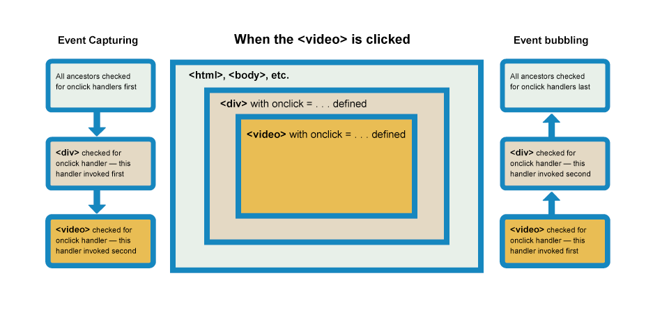

<!-- 事件捕获和冒泡 -->
<div class="container" id="container">
    <div class="item" id="item">
        <div class="btn" id="btn">Click me</div>
        
    </div>
</div>
<script>
    document.addEventListener('click', (e) => console.log('Document click When Capture'), { capture: true })
    container.addEventListener(
        'click',
        (e) => {
            console.log('Container click When Capture')
            // e.stopPropagation() // 捕获阶段停止传播，以下事件监听不会被触发
        },
        { capture: true }
    )
    item.addEventListener('click', () => console.log('Item click When Capture'), { capture: true })
    btn.addEventListener('click', () => console.log('Btn click When Capture'), { capture: true })

    btn.addEventListener('click', () => console.log('Btn click When Bubble'))
    item.addEventListener('click', () => console.log('Item click When Bubble'))
    container.addEventListener('click', () => console.log('container click When Bubble'))
    document.addEventListener('click', () => console.log('Document click When Bubble'))
</script>
